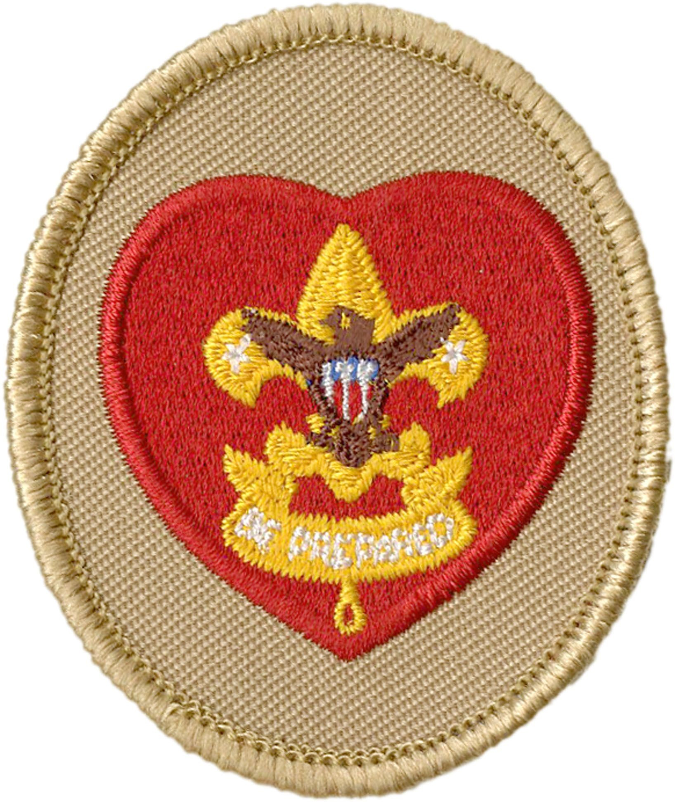
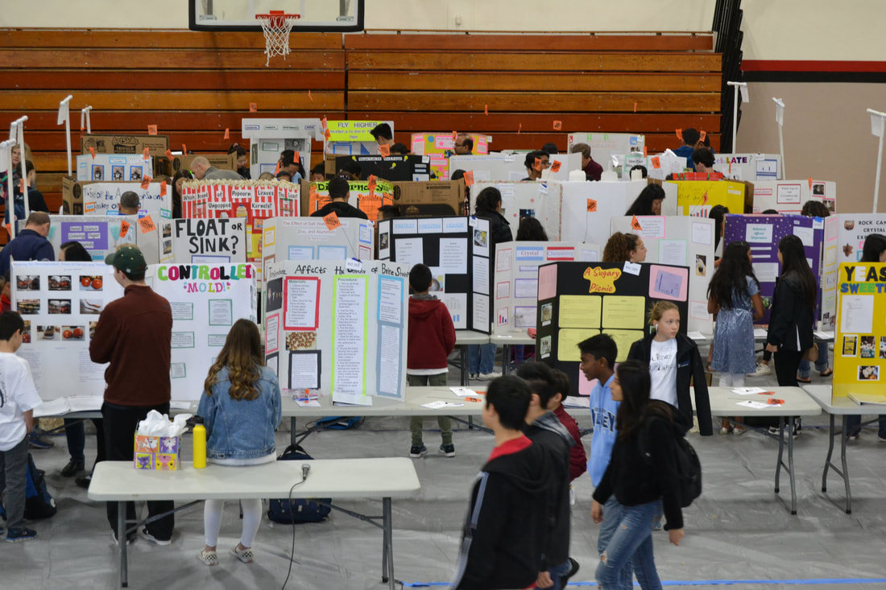
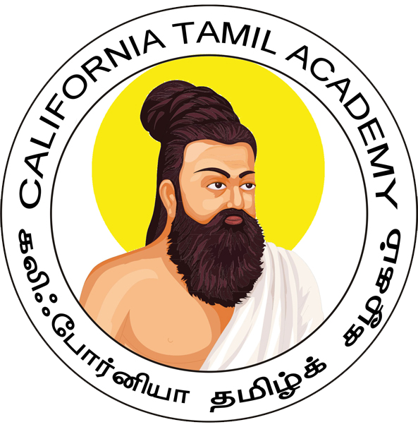

Service

Boy Scouts of America (Troop 621) - Life Scout
- Was involved with projects including organizing food drives, cleaning up local parks, and assisting with community events.
- Managed and made decisions on behalf of 12 other scouts during weekly meetings and monthly “outings”.
- Actively resolved conflicts and consulted with other troop officials to learn better patrol management strategies.
DVHS Science Alliance - Student Mentor
- Coached multiple 5th grade students through the process of developing and experimenting their own
research question.
- Students received numerous awards for their work, including two 3rd place awards, a 2nd place award,
and the District Award for Environmental Science.


California Tamil Academy - Teaching Assistant
- Volunteered 2-3 hours every weekend teaching foreign language (Tamil) to elementary and middle
school students.
- Developed and implemented new teaching strategies to increase student engagement and retention.
- Assisted in organizing and running annual cultural events.
Boy Scouts of America (Troop 621) - Life Scout
- Was involved with projects including organizing food drives, cleaning up local parks, and assisting with community events.
- Managed and made decisions on behalf of 12 other scouts during weekly meetings and monthly “outings”.
- Actively resolved conflicts and consulted with other troop officials to learn better patrol management strategies.
DVHS Science Alliance - Student Mentor
- Coached multiple 5th grade students through the process of developing and experimenting their own research question.
- Students received numerous awards for their work, including two 3rd place awards, a 2nd place award, and the District Award for Environmental Science.
California Tamil Academy - Teaching Assistant
- Volunteered 2-3 hours every weekend teaching foreign language (Tamil) to elementary and middle school students.
- Developed and implemented new teaching strategies to increase student engagement and retention.
- Assisted in organizing and running annual cultural events.